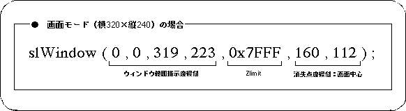

Return to previous page | Return to menu | Go to next page
To set the default window again after rewriting the default window for some reason, enter the following value in the library function “slWindow”.
However, in the example shown below, the screen size is assumed to be 320 (horizontal x 224 vertical).

The default window is a window of the same size as the monitor.
The window size is the same size as the monitor (the value varies depending on the screen mode), the rear limit coordinate value is “0x7FFF”, and the vanishing point is set at the center of the monitor.